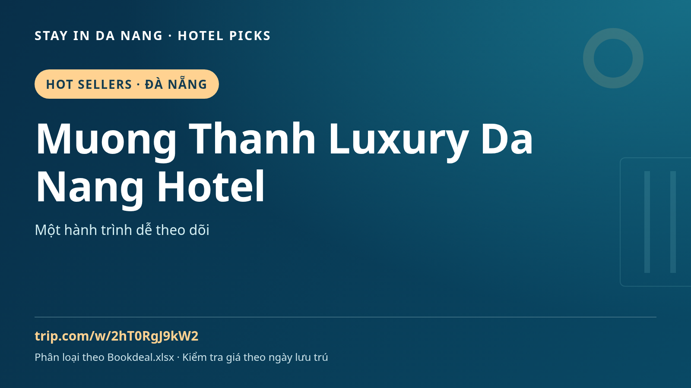

Muong Thanh Luxury Da Nang Hotel | दा नांग, वियतनाम में ठहरने की गाइड
दा नांग यात्रा की योजना है? मध्य वियतनाम के भोजन, संस्कृति और दिन की यात्राओं के साथ ठहरने की तुलना में Muong Thanh Luxury Da Nang Hotel को शामिल करें।

Top Deals और Hot Sellers फाइल की श्रेणियाँ हैं, सत्यापित छूट या तत्काल बिक्री रैंकिंग नहीं। फाइल में कीमत या लागू तारीख नहीं है।
Muong Thanh Luxury Da Nang Hotel पर विचार कैसे करें
पहले स्थान को अपनी यात्रा से मिलाएँ। हाल की समीक्षा, कमरे की तस्वीरें, रद्द करने की शर्तें, नाश्ता और परिवहन देखें। सुविधाएँ, कीमत और उपलब्धता तारीख तथा कमरे पर निर्भर हैं; नाम या प्रचार तस्वीर के बजाय बुकिंग पृष्ठ से पुष्टि करें।
दा नांग यात्रा विचार
माय खे, हान नदी क्षेत्र और होई आन की अलग यात्रा के लिए समय रखें। इससे होटल का इन जगहों के बिल्कुल पास होना नहीं सिद्ध होता। तारीखों की तुलना, हवाई अड्डे का परिवहन और स्थानीय यात्रा पहले तय करें, बीच में आराम रखें।
बुकिंग से पहले
- सही पता और यात्रा परिवहन जाँचें।
- कमरा, अतिथि संख्या, भोजन, कर और रद्द करने की शर्तें तुलना करें।
- अपनी वास्तविक तारीख की उपलब्धता और अंतिम कीमत देखें।
Trip.com पर कमरे और कीमत देखें ↗
स्रोत: Bookdeal_Image_Automation_Ready (1).xlsx · Hot Sellers